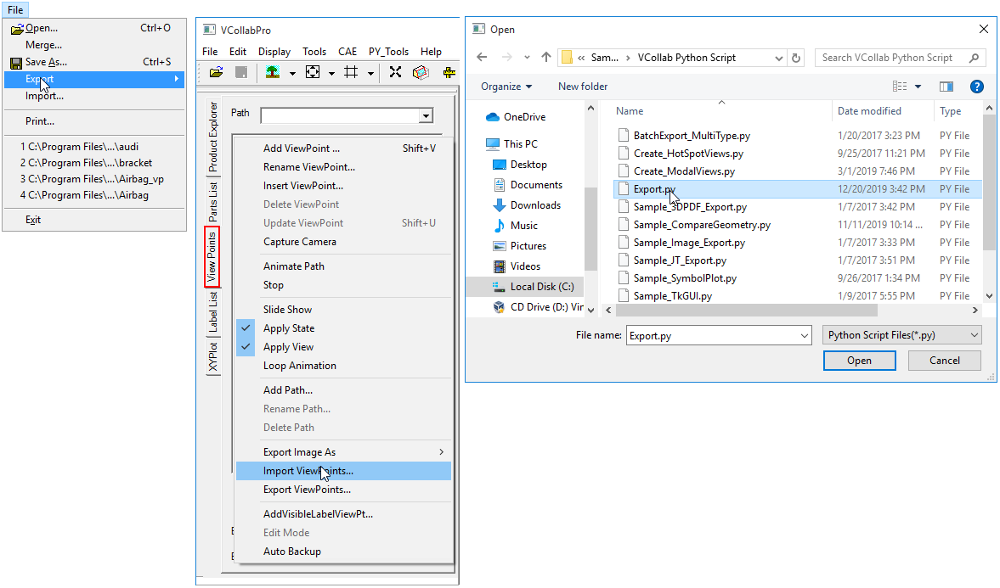
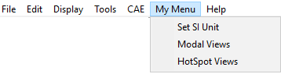

Script Interface
VCollab Python API is an Application Programming Interface (API) for integrating and customizing VCollab Pro application using Python scripts. Python is embedded into VCollab Pro to provide a scripting interface to VCollab Pro users.
For more information, refer to VCollab Python API.pdf in the VCollab installation directory.
Uses of Python Scripts
In general, these python interface functions can be used for,
- Developing customized functions, load specific models, show required parts, compare models, display specific 2D labels, create specific results, hotspots and viewpoints.
- Develop customized batch mode applications to create images or merge CAX files.
- Develop customized applications to generate viewpoints (CAX Reports) automatically (Report Automation)
The VCollab Pro python API functions are arranged into the following groups.
- General functions: General status query functions are in this group.
- File operation functions: Functions such as load, save and merge CAX files, export viewpoints as PPT are present in this group.
- Edit operation functions: Functions for the selection and manipulation (show/hide/delete/rename/transform) of parts are in this group. Functions for setting background color are also in this group.
- View operation functions: Functions related to viewing such as setting display modes, feature edge display mode, explode mode, fit view etc. are present in this group.
- CAE operation functions: CAE operation functions that are used to select result, set legend parameters, probe label attributes, set hotspot dialog parameters, create hotspots, set CAE animation settings, etc. are present in this group.
- Multi-Model operation functions: Functions that set multi model parameters such as current model, legend options etc. are present here.
- Viewpoint operation functions: Functions that create, select and manipulate viewpoints are present in this group.
- Note/Label operation functions: Functions that add and edit notes are present in this group.
Note:
- Python version 3 scripts are supported
- Most of the function names and arguments for Python interface functions are the same as Presenter API functions.
- When a CAD model is loaded, CAE functions may not work
- The functions are a part of VCollab Pro. Python scripts with VCollab API can’t be executed independently.
VCollab Scripting Interface
Python 3 is embedded into VCollab Pro (using C++) to provide scripting interface to VCollab. VCollab API functions listed here can be called from python scripts. Users need to create a python script and run it from VCollab Pro. The python scripts can be run in following two modes:
In Batch Mode:
- When python scripts are specified as command argument, the script will be executed in batch mode. In this mode users can use a python script to create a CAX file with viewpoints or create customized reports as image, PPT and other supported formats.
- Run script: "C:Program FilesVCollabVCollabPro64VCollabPro.exe" -b "C:TempMyReport_A.py"
- Load file1.cax and run script: "C:Program FilesVCollabVCollabPro64VCollabPro.exe" -b "C:TempMyReport_A.py" <file1.cax>
- Load file1.cax, merge file2.cax and run script: "C:Program FilesVCollabVCollabPro64VCollabPro.exe" -b "C:TempMyReport_A.py" <file1.cax> <file2.cax>
In GUI Mode :
- Python scripts can be specified as input in File->Import menu
- Python scripts can also be specified as input for the Import ViewPoints… function in the Viewpoints context menu in GUI mode.
- In this mode users can run a python script as a customized functionality in VCollab Pro.

The python scripts are executed from VCollab Pro. All VCollab functions are listed under python interface object _VCollabAPI.
A typical python script will look like this.
#Sample VCollab Script to create a viewpoint with Stress result import _VCollabAPI # import Python interface Object from VCollabPro bRtnFlag = False; bDebugFlag = True; # flag used to show pop-up messages while debugging # Open CAX file bRtnFlag = _VCollabAPI.xFileOpen(u"c:\Temp\beam.cax"); #Check for error status, If there is an error display a pop-up message if bRtnFlag == False: _VCollabAPI.xMessageBox(_VCollabAPI.xGetLastError(),bDebugFlag); _VCollabAPI.xMessageBox(u"Start: beam.cax File Loaded", bDebugFlag); #Get Current Model Name sCurModel = _VCollabAPI.xGetCurCAEModelName(); #Display Stress Result sCurResult = u"Stress"; sCurInstance = u"L1M1"; sCurDerivedResult = u"Von Mises Stress"; bRtnFlag = _VCollabAPI .xSetCAEResult(sCurModel,sCurResult,sCurInstance,sCurDerivedResult); if bRtnFlag == False: _VCollabAPI.xMessageBox(_VCollabAPI.xGetLastError(),bDebugFlag); # Create Viewpoint sViewPathName = u"Path 1"; sViewPointName = u"VP1- Von Mises Stress" bRtnFlag = _VCollabAPI.xAddViewPoint(sViewPointName, sViewPathName,-1); if bRtnFlag == False: _VCollabAPI.xMessageBox(_VCollabAPI.xGetLastError(),bDebugFlag); #Save as CAX file bRtnFlag=_VCollabAPI.xFileSave(u"C:\Temp\beam-vp.cax"); if bRtnFlag == False: _VCollabAPI.xMessageBox(_VCollabAPI.xGetLastError(),bDebugFlag); _VCollabAPI.xMessageBox(u"END: beam-vp.cax File Saved", bDebugFlag); |
For more details, refer to the VCollab Python API manual, which is available in the VCollab Pro installation directory.
Menu Customization
VCollab Pro allows users to append the menu with their own items using python script files and a CSV file.
- Go to "%VCOLLAB_DIR%SamplesVCollab Python Script"
- Look for a file named, "VCollabPythonUI.csv"
- It contains menu name, item names and its corresponding python file path
- Open and edit the file with your own titles and python file paths.
- Save the file.
- Copy the file "VCollabPythonUI.csv" to %APPDATA%VCollab folder.
- Open or restart VCollabPro application.
- The new interfaces can be seen as menu or toolbar items based on the UI style specified in the CSV file.
CSV file content format
| Line Number | Syntax | Description |
|---|---|---|
1 2 3 4 . . |
# VCollab_Python_INTERFACE GUI Mode = <style > < Menu Name > < Menu Item 1 > , < Python File Path > < Menu Item 2 > , < Python File Path > ... |
VCollab header constant Style of interface; "style=0" means menu with items and "style=1" means toolbar with items. Enter your menu name. Enter menu item name and corresponding python file path ... ... |
Example CSV File
#VCollab_Python_INTERFACE GUI Mode=0 My Menu Set SI Unit,%VCOLLAB_DIR%SamplesVCollab Python ScriptsetUNITS_SI.py Modal Views,%VCOLLAB_DIR%SamplesVCollab Python ScriptCreate_ModalViews.py HotSpot Views,%VCOLLAB_DIR%SamplesVCollab Python ScriptCreate_HotSpotViews.py |
Corresponding Menu/toolbar in VCollab Pro for above csv file
In "GUI Mode =0", the menu is appended with item names.

In "GUI Mode =1", the toolbar is appended with item indices.